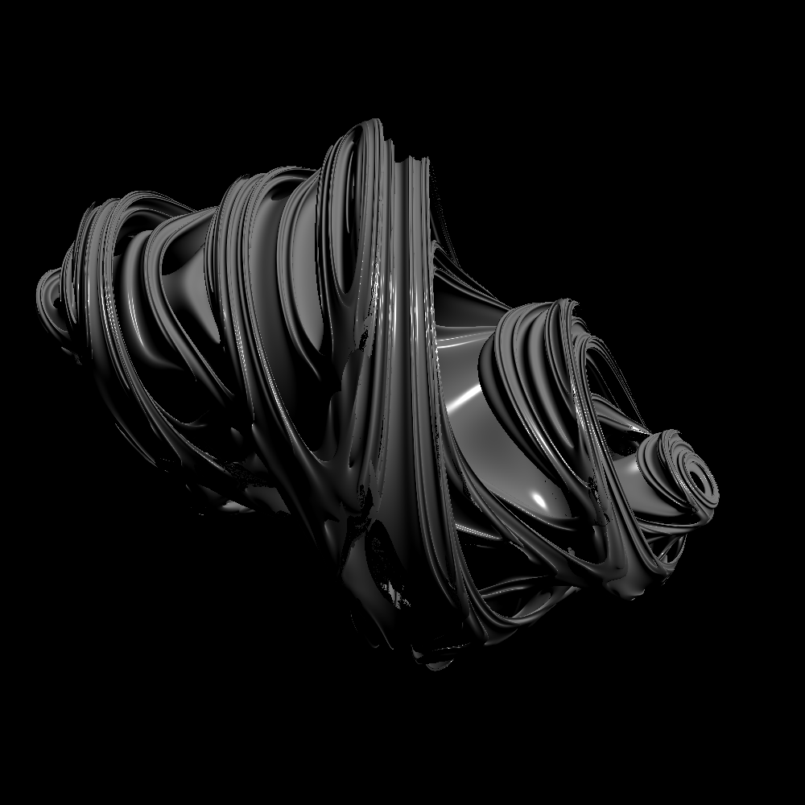
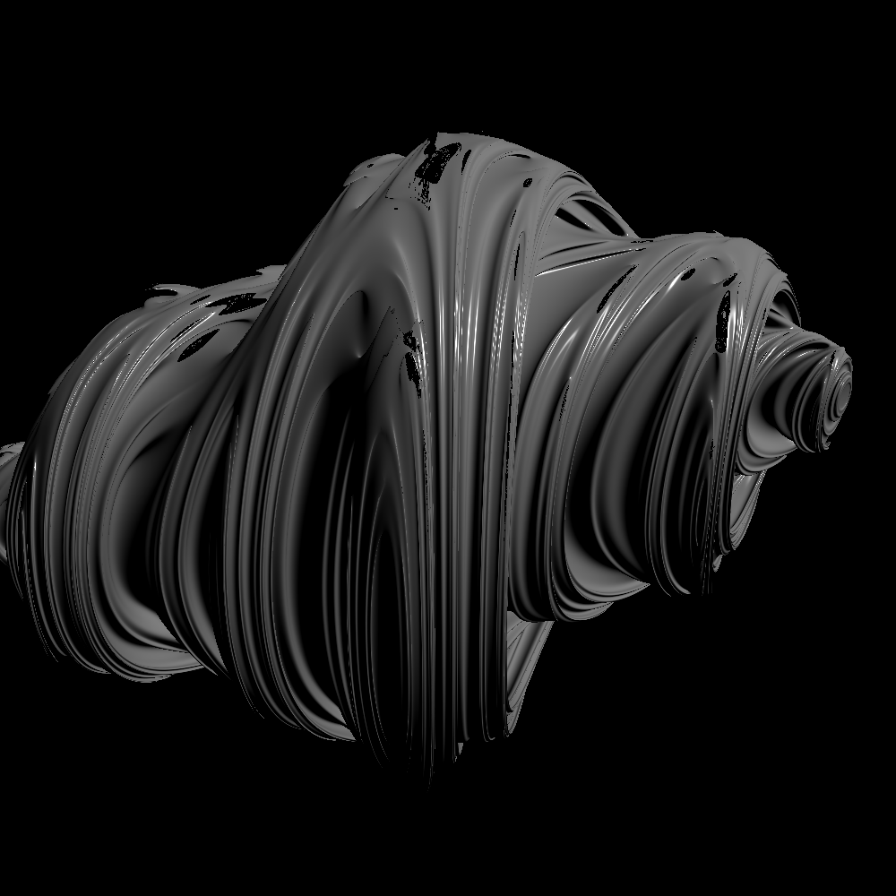
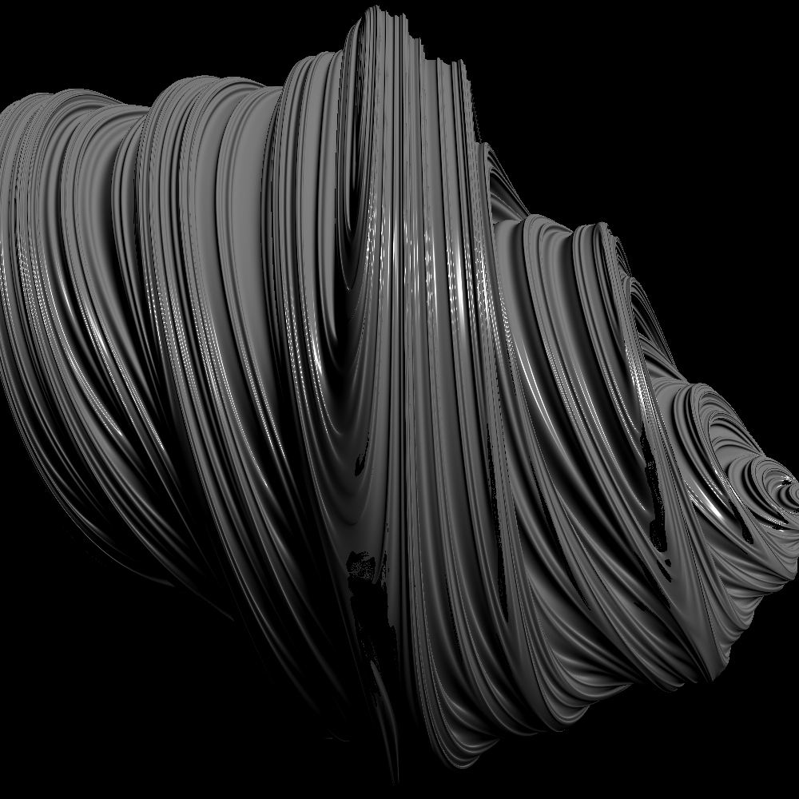
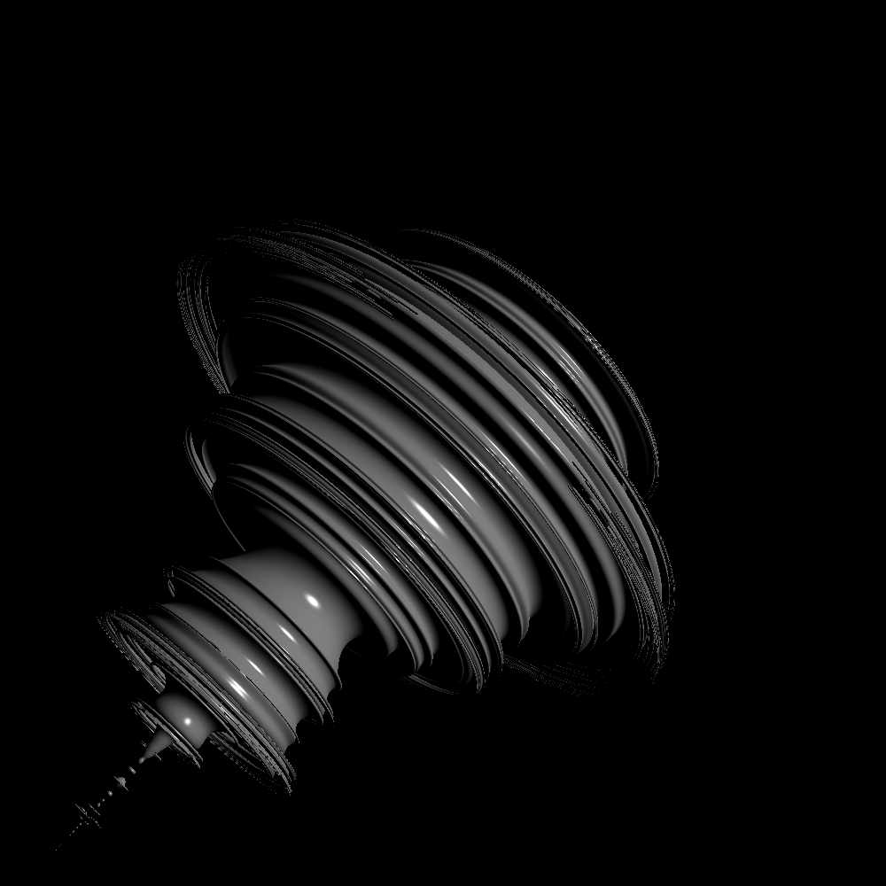

<!DOCTYPE html>
<html lang="en-us">
  <head>
    <title>Distance Estimators for 3D Fractals | Hiroki Sakuma</title>

    <meta charset="utf-8">
<meta http-equiv="X-UA-Compatible" content="IE=edge,chrome=1">    
<meta name="viewport" content="width=device-width,minimum-scale=1">
<meta name="description" content="最近好みの音楽が立て続けにリリースされたので，ちょっとまとめてみようと思う． 基本的にはいわゆるエレクトロニックミュージックを中心に聴いている">
<meta name="generator" content="Hugo 0.80.0" />


  <META NAME="ROBOTS" CONTENT="NOINDEX, NOFOLLOW">


<link rel="stylesheet" href="/css/style.css">
<link rel="shortcut icon" href="/images/favicon.ico" type="image/x-icon" />

 
    
<script type="application/javascript">
var doNotTrack = false;
if (!doNotTrack) {
	window.ga=window.ga||function(){(ga.q=ga.q||[]).push(arguments)};ga.l=+new Date;
	ga('create', 'UA-179623902-1', 'auto');
	
	ga('send', 'pageview');
}
</script>
<script async src='https://www.google-analytics.com/analytics.js'></script>


  </head>

  <body>
    <nav class="navigation">
	
		<a href="/"> <span class="arrow">←</span>Home</a>
	
	<a href="/posts">Archive</a>
	<a href="/tags">Tags</a>
	<a href="/about">About</a>

	

	
	  <a class="button" href="https://hirokisakuma.com/index.xml">Subscribe</a>
	
</nav>


    <main class="main">
      

<section id="single">
    <h1 class="title">Distance Estimators for 3D Fractals</h1>

    <div class="tip">
        <span>
          Oct 25, 2020 20:25
        </span>
        <span class="split">
          ·
        </span>
        <span>
          
            4588 words
          
        </span>
        <span class="split">
          ·
        </span>
        <span>
          10 minute read
        </span>
    </div>

    <div class="content">
      <p>先日のポストでは <a 
    href="https://openaccess.thecvf.com/content_CVPR_2020/papers/Niemeyer_Differentiable_Volumetric_Rendering_Learning_Implicit_3D_Representations_Without_3D_Supervision_CVPR_2020_paper.pdf"
    
    
     
      target="_blank" 
      rel="noopener"
    
>
    DVR [Niemeyer et al., CVPR'20]
</a> を参考にDNNでSigned Distance Function (SDF)をモデル化し，学習させてみた．
forwardではスフィアトレーシングによるレンダリングを行い，backwardではオブジェクトとの交点の微分を陰関数微分により求めることで，微分可能レンダリングの枠組みでDNNの最適化を試みた．しかし，現状全く学習がうまく進んでいない．</p>
<p><a 
    href="https://openaccess.thecvf.com/content_CVPR_2020/papers/Niemeyer_Differentiable_Volumetric_Rendering_Learning_Implicit_3D_Representations_Without_3D_Supervision_CVPR_2020_paper.pdf"
    
    
     
      target="_blank" 
      rel="noopener"
    
>
    DVR [Niemeyer et al., CVPR'20]
</a> ではSigned Distance Functionではなく，Occupancy Networkをモデル化している．なぜこれをSigned Distance Functionに置き換えたのかというと，GLSLでそのままスフィアトレーシングによりレンダリングしたかったからだ．
しかしOccupancy Networkの方が，例えば物体の投影された領域が分かっている場合などは，教師信号を与えることができる点で最適化しやすいように思う．また，Signed Distance Functionをモデル化している <a 
    href="https://openaccess.thecvf.com/content_CVPR_2020/papers/Jiang_SDFDiff_Differentiable_Rendering_of_Signed_Distance_Fields_for_3D_Shape_CVPR_2020_paper.pdf"
    
    
     
      target="_blank" 
      rel="noopener"
    
>
    SDFDiff [Jiang et al., CVPR'20]
</a> などは3D deconvolutionによるボクセルベースのSigned Distance Functionを用いており，ビジョンにおける画像生成が2D deconvolutionによって成功していることを考えると，convolutionの力を借りないと難しいのかもしれない．</p>
<p>でもOccupancy Networkなどで表現されたオブジェクトなどのように，Signed Distance Functionが直接分からない場合でもスフィアトレーシングできるケースがあることを知った．</p>
<p>話が変わるが，フラクタルの有名な例としてJulia集合，Mandelbrot集合などがある．
以下のような2次関数が与えられた際に，</p>
<p>$$f_{c}(z)=z^{2}+c$$</p>
<p>Julia集合$\mathcal{J_{c}}$，Mandelbrot集合$\mathcal{M}$は以下で定義される．</p>
<p>$$\mathcal{J_{c}}=\{z: \lim_{n \to \infty}f_{c}^{n}(z) \not\to \infty\}$$
$$\mathcal{M}=\{c: \lim_{n \to \infty}f_{c}^{n}(z) \not\to \infty, f'_{c}(z)=0\}$$</p>
<p>$z,c$は通常複素数であり，$\mathcal{J_{c}},\mathcal{M}$を複素平面上に表すと，フラクタルが現れる．</p>
<br>
<div align="center">


<p><span>2D Julia set &amp; Mandelbrot set</span></p>
</div>
<br>
<p>ここでこれら$\mathcal{J_{c}},\mathcal{M}$を3次元に拡張したいと思うのは自然なことであり，$z,c$を四元数（
クォータニオン）として表して，最後に適当な超平面に射影すれば，実際に3次元のフラクタルを得ることができる．
ここでなぜ三元数を考えないのかと思ったが，$f_{c}$を適用することを考えると，$z,c$が定義される代数系は加法と乗法について閉じている必要があるが，三元数は乗法について閉じていないので，三元数を通して$\mathcal{J_{c}},\mathcal{M}$を得ることはできない，ということらしい．
実際に，三元数$a+bi+cj$を考え，$$ij=\alpha+\beta i+\gamma j$$を満たす実数$\alpha,\beta,\gamma$が存在するか調べると，
$$(\alpha\gamma-\beta)+(\alpha+\beta\gamma)i+(\gamma^{2}+1)j=0$$
より，$$\gamma^{2}+1=0$$を満たす実数$\gamma$は存在しない．よって三元数は乗法について閉じていない．
ということでわざわざ四元数を持ち出しているということだ．</p>
<p>これでクォータニオンを持ち込めば，3次元のフラクタルが得られることが分かったが，それをどうレンダリングすればいいのだろう．
2次元の場合は各ピクセルについて単に$\lim_{n \to \infty}f_{c}(z)$が収束するか否かを調べれば良かったが，3次元の場合はピクセルに向けて飛ばしたレイ上の全ての点をしらみつぶしに調べるわけにもいかない．
フラクタルまでの距離がわかれば，スフィアトレーシングできるが，結論から言うと$\mathcal{J_{c}},\mathcal{M}$に対するDistance Functionは存在しない．</p>
<p>が，Distance Functionの近似なら求めることができるようだ．</p>
<p><a 
    href="http://pi.math.cornell.edu/~hubbard/OrsayEnglish.pdf"
    
    
     
      target="_blank" 
      rel="noopener"
    
>
    The Orsay Notes [Douady and Hubbard, 1984]
</a> によると，点$z$におけるJulia集合$\mathcal{J_{c}}$に対するポテンシャル$G(z)$は以下で与えられる．</p>
<p>$$G(z)=\lim_{n \to \infty}\cfrac{1}{2^{n}}log|f_{c}^{n}(z)|$$</p>
<p>$\mathcal{J_{c}}$の定義から，$\mathcal{J_{c}}$に含まれる点$z$で$G(z)=0$となる．
このポテンシャル$G(z)$を用いると，$\mathcal{J_{c}}$の外側のある点$z$から$\mathcal{J_{c}}$の境界までの距離$d(z)$のboundは以下のように導かれる．</p>
<p>$$\cfrac{\sinh{G(z)}}{2e^{G(z)}|G'(z)|}&lt;d(z)&lt;\cfrac{2\sinh{G(z)}}{|G'(z)|}$$</p>
<p><a 
    href="https://www.springer.com/gp/book/9781461283492"
    
    
     
      target="_blank" 
      rel="noopener"
    
>
    The Science of Fractal Images [Fisher, 1988]
</a> のAppendix Dにここの導出が詳しく書いてある．
実用上は$z$が$\mathcal{J_{c}}$に十分近いとして，</p>
<p>$$d(z)&gt;\cfrac{|{f_{c}}^{n}(z)|}{2|{f_{c}^{n}}'(z)|}\log|f_{c}^{n}(z)|$$</p>
<p>とすることが多いようだ．これはポテンシャル$G(z)$をテイラー展開して1次近似してるのかと思ったが，厳密には違うっぽい．
いずれにせよ下限がわかれば，その分だけレイを進めることができそうだ．</p>
<p>ここで，${f_{c}^{n}}'(z)$はどうやって求めるのだろう．
考えられるのは数値微分か自動微分．今回は双対数（Dual Number）を用いたフォワード型の自動微分を行った．
今回微分したい$f_{c}(z)$は入力，出力ともにクォータニオンなので，クォータニオンの双対数（Dual Quaternion）を考えることになり，結構ややこしそうだ．</p>
<p>まずはクォータニオン用の演算を定義しておく．</p>
<div class="highlight"><pre style="color:#f8f8f2;background-color:#272822;-moz-tab-size:4;-o-tab-size:4;tab-size:4"><code class="language-cpp" data-lang="cpp"><span style="color:#75715e">// ---------------- quaternion ---------------- //
</span><span style="color:#75715e"></span>
vec4 <span style="color:#a6e22e">qAdd</span>(vec4 q1, vec4 q2)
{
    <span style="color:#75715e">// return vec4(q1.x + q2.x, q1.yzw + q2.yzw);
</span><span style="color:#75715e"></span>    <span style="color:#66d9ef">return</span> q1 <span style="color:#f92672">+</span> q2;
}

vec4 <span style="color:#a6e22e">qSub</span>(vec4 q1, vec4 q2)
{
    <span style="color:#75715e">// return vec4(q1.x - q2.x, q1.yzw - q2.yzw);
</span><span style="color:#75715e"></span>    <span style="color:#66d9ef">return</span> q1 <span style="color:#f92672">-</span> q2;
}

vec4 <span style="color:#a6e22e">qMul</span>(vec4 q1, vec4 q2)
{
    <span style="color:#66d9ef">return</span> vec4(q1.x <span style="color:#f92672">*</span> q2.x <span style="color:#f92672">-</span> dot(q1.yzw, q2.yzw), q2.x <span style="color:#f92672">*</span> q1.yzw <span style="color:#f92672">+</span> q1.x <span style="color:#f92672">*</span> q2.yzw <span style="color:#f92672">+</span> cross(q1.yzw, q2.yzw));
}

vec4 <span style="color:#a6e22e">qConj</span>(vec4 q)
{
    <span style="color:#66d9ef">return</span> vec4(q.x, <span style="color:#f92672">-</span>q.yzw);
}

vec4 <span style="color:#a6e22e">qInv</span>(vec4 q)
{
    <span style="color:#66d9ef">return</span> qConj(q) <span style="color:#f92672">/</span> pow(length(q),<span style="color:#ae81ff">2</span>);
}

vec4 <span style="color:#a6e22e">qDiv</span>(vec4 q1, vec4 q2)
{
    <span style="color:#66d9ef">return</span> qMul(q1, qInv(q2));
}

vec4 <span style="color:#a6e22e">qPow</span>(vec4 q, <span style="color:#66d9ef">int</span> n)
{
    vec4 p <span style="color:#f92672">=</span> vec4(<span style="color:#ae81ff">1.0</span>, vec3(<span style="color:#ae81ff">0.0</span>));
    <span style="color:#66d9ef">for</span> (<span style="color:#66d9ef">int</span> i <span style="color:#f92672">=</span> <span style="color:#ae81ff">0</span>; i <span style="color:#f92672">&lt;</span> n; <span style="color:#f92672">++</span>i)
    {
        p <span style="color:#f92672">=</span> qMul(p, q);
    }
    <span style="color:#66d9ef">return</span> p;
}
</code></pre></div><p>次にDual Quaternion用の演算．ここら辺は定義に従って実装するだけ．
演算子のオーバーロードができないのが辛い．</p>
<div class="highlight"><pre style="color:#f8f8f2;background-color:#272822;-moz-tab-size:4;-o-tab-size:4;tab-size:4"><code class="language-cpp" data-lang="cpp"><span style="color:#75715e">// ---------------- dual ---------------- //
</span><span style="color:#75715e"></span>
<span style="color:#66d9ef">struct</span> <span style="color:#a6e22e">QDual</span>
{
    vec4 q;
    vec4 d;
};

QDual <span style="color:#a6e22e">qdAdd</span>(QDual qd1, QDual qd2)
{
    <span style="color:#66d9ef">return</span> QDual(qAdd(qd1.q, qd2.q), qAdd(qd1.d, qd2.d));
}

QDual <span style="color:#a6e22e">qdSub</span>(QDual qd1, QDual qd2)
{
    <span style="color:#66d9ef">return</span> QDual(qSub(qd1.q, qd2.q), qSub(qd1.d, qd2.d));
}

QDual <span style="color:#a6e22e">qdMul</span>(QDual qd1, QDual qd2)
{
    <span style="color:#66d9ef">return</span> QDual(qMul(qd1.q, qd2.q), qAdd(qMul(qd1.d, qd2.q), qMul(qd1.q, qd2.d)));
}

QDual <span style="color:#a6e22e">qdDiv</span>(QDual qd1, QDual qd2)
{
    <span style="color:#66d9ef">return</span> QDual(qDiv(qd1.q, qd2.q), qDiv(qSub(qMul(qd1.d, qd2.q), qMul(qd1.q, qd2.d)), qMul(qd2.q, qd2.q)));
}

QDual <span style="color:#a6e22e">qdPow</span>(QDual qd, <span style="color:#66d9ef">int</span> n)
{
    QDual p <span style="color:#f92672">=</span> QDual(vec4(<span style="color:#ae81ff">1.0</span>, vec3(<span style="color:#ae81ff">0.0</span>)), vec4(<span style="color:#ae81ff">0.0</span>, vec3(<span style="color:#ae81ff">0.0</span>)));
    <span style="color:#66d9ef">for</span> (<span style="color:#66d9ef">int</span> i <span style="color:#f92672">=</span> <span style="color:#ae81ff">0</span>; i <span style="color:#f92672">&lt;</span> n; <span style="color:#f92672">++</span>i)
    {
        p <span style="color:#f92672">=</span> qdMul(p, qd);
    }
    <span style="color:#66d9ef">return</span> p;
}
</code></pre></div><p>一旦ここら辺を丁寧に実装すれば，低レベルのややこしい演算は抽象化できる．
双対数上で定義された関数$f$に双対数$x+\epsilon$をぶちこむと，$f(x+\epsilon)=f(x)+f'(x)\epsilon$となり，その虚部は常に導関数となっている．
双対数の虚部を，微分したい変数に関しては$1$，それ以外の変数に関しては$0$にしておき，あとは普通に関数に通すだけで良い．
普通にすごいな双対数．</p>
<p>今回で言うと，Julia集合$\mathcal{J_{c}}$に関しては$z$の虚部を$1$，Mandelbrot集合$\mathcal{M}$に関しては$c$の虚部を$1$にしておく．</p>
<p>つまづいたところは，${f_{c}^{n}}(z)$は入力，出力ともにクォータニオンなので，${f_{c}^{n}}'(z)$はヤコビ行列となりそうだが，$|{f_{c}^{n}}'(z)|$は何を意味するのか，ということだった．
いろいろな文献をみて回ったが，結局納得のできる答えは見つからなかった．</p>
<p>ただ，僕のMacBookでレンダリングすることを考えると，毎イテレーションでヤコビ行列を計算したくないのもあり，<a 
    href="https://www.cs.cmu.edu/~kmcrane/Projects/QuaternionJulia/paper.pdf"
    
    
     
      target="_blank" 
      rel="noopener"
    
>
    Ray Tracing Quaternion Julia Sets on the GPU [Crane, 2015]
</a> に従って，クォータニオンの実部に関する微分のみ計算することにした．</p>
<p>この場合はDual Quaternionの虚部のクォータニオンの実部を$1$，虚部を$0$にすれば良い．（ややこしい&hellip;）</p>
<p>これでJulia集合における${f_{c}^{n}}(z)$，${f_{c}^{n}}'(z)$を同時に求めることができそうだ．
${f_{c}^{n}}(z)$，${f_{c}^{n}}'(z)$がわかれば，距離推定により，スフィアトレーシングできる．
距離推定のソースは以下．</p>
<div class="highlight"><pre style="color:#f8f8f2;background-color:#272822;-moz-tab-size:4;-o-tab-size:4;tab-size:4"><code class="language-cpp" data-lang="cpp"><span style="color:#75715e">// ---------------- fractals ---------------- //
</span><span style="color:#75715e"></span>
<span style="color:#66d9ef">float</span> <span style="color:#a6e22e">sdfJulia</span>(vec4 z, vec4 c)
{
    QDual zd <span style="color:#f92672">=</span> QDual(z, vec4(<span style="color:#ae81ff">1.0</span>, vec3(<span style="color:#ae81ff">0.0</span>)));
    QDual cd <span style="color:#f92672">=</span> QDual(c, vec4(<span style="color:#ae81ff">0.0</span>, vec3(<span style="color:#ae81ff">0.0</span>)));
    <span style="color:#66d9ef">for</span> (<span style="color:#66d9ef">int</span> i <span style="color:#f92672">=</span> <span style="color:#ae81ff">0</span>; i <span style="color:#f92672">&lt;</span> juliaIterations; <span style="color:#f92672">++</span>i)
    {
        <span style="color:#75715e">// forward-mode automatic differentiation
</span><span style="color:#75715e"></span>        zd <span style="color:#f92672">=</span> qdAdd(qdPow(zd, <span style="color:#ae81ff">2</span>), cd);
        <span style="color:#66d9ef">if</span> (length(zd.q) <span style="color:#f92672">&gt;</span> <span style="color:#ae81ff">2.0</span>) <span style="color:#66d9ef">break</span>;
    }
    
    <span style="color:#66d9ef">return</span> (length(zd.q) <span style="color:#f92672">*</span> log(length(zd.q))) <span style="color:#f92672">/</span> (<span style="color:#ae81ff">2</span> <span style="color:#f92672">*</span> length(zd.d));
}

<span style="color:#66d9ef">float</span> <span style="color:#a6e22e">sdfMandelbrot</span>(vec4 c, vec4 z)
{
    QDual zd <span style="color:#f92672">=</span> QDual(z, vec4(<span style="color:#ae81ff">0.0</span>, vec3(<span style="color:#ae81ff">0.0</span>)));
    QDual cd <span style="color:#f92672">=</span> QDual(c, vec4(<span style="color:#ae81ff">1.0</span>, vec3(<span style="color:#ae81ff">0.0</span>)));
    <span style="color:#66d9ef">for</span> (<span style="color:#66d9ef">int</span> i <span style="color:#f92672">=</span> <span style="color:#ae81ff">0</span>; i <span style="color:#f92672">&lt;</span> mandelbrotIterations; <span style="color:#f92672">++</span>i)
    {
        <span style="color:#75715e">// forward-mode automatic differentiation
</span><span style="color:#75715e"></span>        zd <span style="color:#f92672">=</span> qdAdd(qdPow(zd, <span style="color:#ae81ff">2</span>), cd);
        <span style="color:#66d9ef">if</span> (length(zd.q) <span style="color:#f92672">&gt;</span> <span style="color:#ae81ff">2.0</span>) <span style="color:#66d9ef">break</span>;
    }
    
    <span style="color:#66d9ef">return</span> (length(zd.q) <span style="color:#f92672">*</span> log(length(zd.q))) <span style="color:#f92672">/</span> (<span style="color:#ae81ff">2</span> <span style="color:#f92672">*</span> length(zd.d));
}
</code></pre></div><p>あと必要なのは法線である．ポテンシャル$G(z)$または推定距離$d(z)$の微分が計算できれば良さそうだ．
$$G(z)=\lim_{n \to \infty}\cfrac{1}{2^{n}}log|f_{c}^{n}(z)|$$より，
$$\nabla G(z)=\cfrac{1}{2^{n}|f_{c}^{n}(z)|}\nabla\sqrt{f_{c}^{n}(z)^{T}f_{c}^{n}(z)}=\cfrac{{f_{c}^{n}}'(z)^{T}f_{c}^{n}(z)}{2^{n}|f_{c}^{n}(z)|^{2}}$$</p>
<p>これで距離推定と同時に法線も推定できることがわかった．</p>
<p>ただ法線に関してはヤコビ行列を計算したいので，DualQuaternionの虚部がmat4になる．mat4についてDualQuaternionの演算を定義するのは大変なので，シンプルにchain ruleでヤコビ行列を追跡していった．</p>
<p>$$f_{c}^{n}(z)=(f_{c}^{n-1}(z))^{2}+c$$</p>
<p>より，</p>
<p>$${f_{c}^{n}}’(z)=2\begin{pmatrix}f_{c}^{n-1}(z)_{x} &amp; -f_{c}^{n-1}(z)_{y} &amp; -f_{c}^{n-1}(z)_{z} &amp; -f_{c}^{n-1}(z)_{w}\\ f_{c}^{n-1}(z)_{y} &amp; f_{c}^{n-1}(z)_{x} &amp; 0 &amp; 0\\ f_{c}^{n-1}(z)_{z} &amp; 0 &amp; f_{c}^{n-1}(z)_{x} &amp; 0\\ f_{c}^{n-1}(z)_{w} &amp; 0 &amp; 0 &amp; f_{c}^{n-1}(z)_{x}\end{pmatrix}{f_{c}^{n-1}}'(z)$$</p>
<p>これで$f_{c}^{n}(z)$の計算と同時に${f_{c}^{n}}'(z)$も計算できる．
最初以下のように普通に計算しようとしたが，クォータニオンの場合にはそもそも計算できなかったので，上式は手で微分して突っ込んだ．</p>
<p>$${f_{c}^{n}}’(z)=2{f_{c}^{n-1}}(z){f_{c}^{n-1}}'(z)$$</p>
<p>chain ruleでこんなに簡単に追跡できるなら，双対数を導入する必要性はなかった気もするが，これを機にいろいろ知れたし．これはこれで良かったと思う．
法線推定のソースは以下．</p>
<div class="highlight"><pre style="color:#f8f8f2;background-color:#272822;-moz-tab-size:4;-o-tab-size:4;tab-size:4"><code class="language-cpp" data-lang="cpp"><span style="color:#75715e">// ---------------- fractals ---------------- //
</span><span style="color:#75715e"></span>
vec4 <span style="color:#a6e22e">normalJulia</span>(vec4 z, vec4 c)
{
    <span style="color:#75715e">// jacobian
</span><span style="color:#75715e"></span>    mat4 J <span style="color:#f92672">=</span> mat4(<span style="color:#ae81ff">1.0</span>);
    <span style="color:#66d9ef">for</span> (<span style="color:#66d9ef">int</span> i <span style="color:#f92672">=</span> <span style="color:#ae81ff">0</span>; i <span style="color:#f92672">&lt;</span> juliaIterations; <span style="color:#f92672">++</span>i)
    {
        <span style="color:#75715e">// forward-mode manual differentiation
</span><span style="color:#75715e"></span>        <span style="color:#75715e">// NOTE: glsl uses column-major matrices
</span><span style="color:#75715e"></span>        J <span style="color:#f92672">=</span> <span style="color:#ae81ff">2</span> <span style="color:#f92672">*</span> mat4(
            <span style="color:#f92672">+</span>z.x, z.y, z.z, z.w,
            <span style="color:#f92672">-</span>z.y, z.x, <span style="color:#ae81ff">0.0</span>, <span style="color:#ae81ff">0.0</span>,
            <span style="color:#f92672">-</span>z.z, <span style="color:#ae81ff">0.0</span>, z.x, <span style="color:#ae81ff">0.0</span>,
            <span style="color:#f92672">-</span>z.w, <span style="color:#ae81ff">0.0</span>, <span style="color:#ae81ff">0.0</span>, z.x
        ) <span style="color:#f92672">*</span> J;
        z <span style="color:#f92672">=</span> qAdd(qPow(z, <span style="color:#ae81ff">2</span>), c);
        <span style="color:#66d9ef">if</span> (length(z) <span style="color:#f92672">&gt;</span> <span style="color:#ae81ff">2.0</span>) <span style="color:#66d9ef">break</span>;
    }
    
    <span style="color:#66d9ef">return</span> z <span style="color:#f92672">*</span> J;
}

vec4 <span style="color:#a6e22e">normalMandelbrot</span>(vec4 c, vec4 z)
{
    <span style="color:#75715e">// jacobian
</span><span style="color:#75715e"></span>    mat4 J <span style="color:#f92672">=</span> mat4(<span style="color:#ae81ff">0.0</span>);
    <span style="color:#66d9ef">for</span> (<span style="color:#66d9ef">int</span> i <span style="color:#f92672">=</span> <span style="color:#ae81ff">0</span>; i <span style="color:#f92672">&lt;</span> mandelbrotIterations; <span style="color:#f92672">++</span>i)
    {
        <span style="color:#75715e">// forward-mode manual differentiation
</span><span style="color:#75715e"></span>        <span style="color:#75715e">// NOTE: glsl uses column-major matrices
</span><span style="color:#75715e"></span>        J <span style="color:#f92672">=</span> <span style="color:#ae81ff">2</span> <span style="color:#f92672">*</span> mat4(
            <span style="color:#f92672">+</span>z.x, z.y, z.z, z.w,
            <span style="color:#f92672">-</span>z.y, z.x, <span style="color:#ae81ff">0.0</span>, <span style="color:#ae81ff">0.0</span>,
            <span style="color:#f92672">-</span>z.z, <span style="color:#ae81ff">0.0</span>, z.x, <span style="color:#ae81ff">0.0</span>,
            <span style="color:#f92672">-</span>z.w, <span style="color:#ae81ff">0.0</span>, <span style="color:#ae81ff">0.0</span>, z.x
        ) <span style="color:#f92672">*</span> J <span style="color:#f92672">+</span> mat4(<span style="color:#ae81ff">1.0</span>);
        z <span style="color:#f92672">=</span> qAdd(qPow(z, <span style="color:#ae81ff">2</span>), c);
        <span style="color:#66d9ef">if</span> (length(z) <span style="color:#f92672">&gt;</span> <span style="color:#ae81ff">2.0</span>) <span style="color:#66d9ef">break</span>;
    }
    
    <span style="color:#66d9ef">return</span> z <span style="color:#f92672">*</span> J;
}
</code></pre></div><p>これで推定された法線を使ってシェーディングできる．今回はシンプルなPhong反射モデルを使ってシェーディングした．
残りのソースは以下．</p>
<div class="highlight"><pre style="color:#f8f8f2;background-color:#272822;-moz-tab-size:4;-o-tab-size:4;tab-size:4"><code class="language-cpp" data-lang="cpp"><span style="color:#75715e">#version 150
</span><span style="color:#75715e"></span>
<span style="color:#75715e">// ---------------- variables ---------------- //
</span><span style="color:#75715e"></span>
uniform <span style="color:#66d9ef">float</span> uElapsedSeconds;
uniform mat4 uViewMatrix;
uniform mat4 uProjectionMatrix;
uniform vec2 uResolution;
uniform vec3 uCameraPosition;
uniform vec3 uLightDirection <span style="color:#f92672">=</span> vec3(<span style="color:#f92672">-</span><span style="color:#ae81ff">1.0</span>, <span style="color:#f92672">-</span><span style="color:#ae81ff">1.0</span>, <span style="color:#f92672">-</span><span style="color:#ae81ff">1.0</span>);
uniform vec4 uLightAmbientColor <span style="color:#f92672">=</span> vec4(vec3(<span style="color:#ae81ff">0.0</span>), <span style="color:#ae81ff">1.0</span>);
uniform vec4 uLightDiffuseColor <span style="color:#f92672">=</span> vec4(vec3(<span style="color:#ae81ff">0.5</span>), <span style="color:#ae81ff">1.0</span>);
uniform vec4 uLightSpecularColor <span style="color:#f92672">=</span> vec4(vec3(<span style="color:#ae81ff">1.0</span>), <span style="color:#ae81ff">1.0</span>);
uniform vec4 uMaterialAmbientColor <span style="color:#f92672">=</span> vec4(vec3(<span style="color:#ae81ff">1.0</span>), <span style="color:#ae81ff">1.0</span>);
uniform vec4 uMaterialDiffuseColor <span style="color:#f92672">=</span> vec4(vec3(<span style="color:#ae81ff">1.0</span>), <span style="color:#ae81ff">1.0</span>);
uniform vec4 uMaterialSpecularColor <span style="color:#f92672">=</span> vec4(vec3(<span style="color:#ae81ff">1.0</span>), <span style="color:#ae81ff">1.0</span>);
uniform vec4 uMaterialEmissionColor <span style="color:#f92672">=</span> vec4(vec3(<span style="color:#ae81ff">0.0</span>), <span style="color:#ae81ff">1.0</span>);
uniform <span style="color:#66d9ef">float</span> uShininess <span style="color:#f92672">=</span> <span style="color:#ae81ff">64.0</span>;
uniform <span style="color:#66d9ef">int</span> juliaIterations <span style="color:#f92672">=</span> <span style="color:#ae81ff">10</span>;
uniform <span style="color:#66d9ef">int</span> mandelbrotIterations <span style="color:#f92672">=</span> <span style="color:#ae81ff">10</span>;
uniform <span style="color:#66d9ef">int</span> marchingIterations <span style="color:#f92672">=</span> <span style="color:#ae81ff">500</span>;
uniform <span style="color:#66d9ef">float</span> convergenceCriteria <span style="color:#f92672">=</span> <span style="color:#ae81ff">1e-4</span>;
out vec4 oFragColor;

<span style="color:#75715e">// ---------------- utilities ---------------- //
</span><span style="color:#75715e"></span>
vec2 <span style="color:#a6e22e">linmap</span>(vec2 in_val, vec2 in_min, vec2 in_max, vec2 out_min, vec2 out_max)
{
    <span style="color:#66d9ef">return</span> (in_val <span style="color:#f92672">-</span> in_min) <span style="color:#f92672">/</span> (in_max <span style="color:#f92672">-</span> in_min) <span style="color:#f92672">*</span> (out_max <span style="color:#f92672">-</span> out_min) <span style="color:#f92672">+</span> out_min;
}

<span style="color:#75715e">// ---------------- reflection ---------------- //
</span><span style="color:#75715e"></span>
vec4 <span style="color:#a6e22e">phongReflection</span>(
    vec3 surfaceNormal,
    vec3 eyeDirection,
    vec3 lightDirection,
    vec4 lightAmbientColor,
    vec4 lightDiffuseColor,
    vec4 lightSpecularColor,
    vec4 materialAmbientColor,
    vec4 materialDiffuseColor,
    vec4 materialSpecularColor,
    vec4 materialEmissionColor,
    <span style="color:#66d9ef">float</span> shineness
)
{
    surfaceNormal <span style="color:#f92672">=</span> normalize(surfaceNormal);
    eyeDirection <span style="color:#f92672">=</span> normalize(eyeDirection);
    lightDirection <span style="color:#f92672">=</span> normalize(lightDirection);
    vec4 ambientColor <span style="color:#f92672">=</span> lightAmbientColor <span style="color:#f92672">*</span> materialAmbientColor;
    vec4 diffuseColor <span style="color:#f92672">=</span> lightDiffuseColor <span style="color:#f92672">*</span> materialDiffuseColor;
    vec4 specularColor <span style="color:#f92672">=</span> lightSpecularColor <span style="color:#f92672">*</span> materialSpecularColor;
    diffuseColor <span style="color:#f92672">*=</span> max(dot(<span style="color:#f92672">-</span>lightDirection, surfaceNormal), <span style="color:#ae81ff">0.0</span>);
    specularColor <span style="color:#f92672">*=</span> pow(max(dot(reflect(lightDirection, surfaceNormal), <span style="color:#f92672">-</span>eyeDirection), <span style="color:#ae81ff">0.0</span>), shineness);
    vec4 color <span style="color:#f92672">=</span> clamp(ambientColor <span style="color:#f92672">+</span> diffuseColor <span style="color:#f92672">+</span> specularColor <span style="color:#f92672">+</span> materialEmissionColor, <span style="color:#ae81ff">0.0</span>, <span style="color:#ae81ff">1.0</span>);
    <span style="color:#66d9ef">return</span> color;
}

<span style="color:#75715e">// ---------------- main ---------------- //
</span><span style="color:#75715e"></span>
<span style="color:#66d9ef">void</span> <span style="color:#a6e22e">main</span>()
{
    vec2 fragCoord <span style="color:#f92672">=</span> linmap(gl_FragCoord.xy, vec2(<span style="color:#ae81ff">0</span>, <span style="color:#ae81ff">0</span>), uResolution, vec2(<span style="color:#f92672">-</span><span style="color:#ae81ff">1</span>, <span style="color:#f92672">-</span><span style="color:#ae81ff">1</span>), vec2(<span style="color:#ae81ff">1</span>, <span style="color:#ae81ff">1</span>));
    
    <span style="color:#75715e">// why this does not work?
</span><span style="color:#75715e"></span>    <span style="color:#75715e">// vec3 rayDirection = normalize((inverse(uViewMatrix) * inverse(uProjectionMatrix) * vec4(vec3(fragCoord, 1.0), 0.0)).xyz);
</span><span style="color:#75715e"></span>    
    vec3 rayDirection <span style="color:#f92672">=</span> normalize((inverse(mat3(uViewMatrix)) <span style="color:#f92672">*</span> inverse(mat3(uProjectionMatrix)) <span style="color:#f92672">*</span> vec3(fragCoord, <span style="color:#ae81ff">1.0</span>)).xyz);
    vec3 rayPosition <span style="color:#f92672">=</span> uCameraPosition;
    
    vec4 juliaType <span style="color:#f92672">=</span> <span style="color:#ae81ff">0.45</span> <span style="color:#f92672">*</span> cos(vec4(<span style="color:#ae81ff">0.5</span>, <span style="color:#ae81ff">3.9</span>, <span style="color:#ae81ff">1.4</span>, <span style="color:#ae81ff">1.1</span>) <span style="color:#f92672">+</span> uElapsedSeconds <span style="color:#f92672">*</span> <span style="color:#ae81ff">0.15</span> <span style="color:#f92672">*</span> vec4(<span style="color:#ae81ff">1.2</span>, <span style="color:#ae81ff">1.7</span>, <span style="color:#ae81ff">1.3</span>, <span style="color:#ae81ff">2.5</span>)) <span style="color:#f92672">-</span> vec4(<span style="color:#ae81ff">0.3</span>, <span style="color:#ae81ff">0.0</span>, <span style="color:#ae81ff">0.0</span>, <span style="color:#ae81ff">0.0</span>);
    vec4 criticalPoint <span style="color:#f92672">=</span> vec4(<span style="color:#ae81ff">0.0</span>);
    
    <span style="color:#66d9ef">for</span> (<span style="color:#66d9ef">int</span> i <span style="color:#f92672">=</span> <span style="color:#ae81ff">0</span>; i <span style="color:#f92672">&lt;</span> marchingIterations; <span style="color:#f92672">++</span>i)
    {
        <span style="color:#66d9ef">float</span> sdf <span style="color:#f92672">=</span> sdfJulia(vec4(rayPosition, <span style="color:#ae81ff">0.0</span>), juliaType);
        <span style="color:#75715e">// float sdf = sdfMandelbrot(vec4(rayPosition, 0.0), criticalPoint);
</span><span style="color:#75715e"></span>        rayPosition <span style="color:#f92672">+=</span> sdf <span style="color:#f92672">*</span> rayDirection;
        <span style="color:#66d9ef">if</span> (abs(sdf) <span style="color:#f92672">&lt;</span> convergenceCriteria)
        {
            vec3 surfaceNormal <span style="color:#f92672">=</span> normalize(normalJulia(vec4(rayPosition, <span style="color:#ae81ff">0.0</span>), juliaType).xyz);
            <span style="color:#75715e">// vec3 surfaceNormal = normalize(normalMandelbrot(vec4(rayPosition, 0.0), criticalPoint).xyz);
</span><span style="color:#75715e"></span>            oFragColor <span style="color:#f92672">=</span> phongReflection(
                surfaceNormal,
                rayDirection,
                uLightDirection,
                uLightAmbientColor,
                uLightDiffuseColor,
                uLightSpecularColor,
                uMaterialAmbientColor,
                uMaterialDiffuseColor,
                uMaterialSpecularColor,
                uMaterialEmissionColor,
                uShininess
            );
            <span style="color:#66d9ef">return</span>;
        }
    }
    oFragColor <span style="color:#f92672">=</span> vec4(vec3(<span style="color:#ae81ff">0.0</span>), <span style="color:#ae81ff">1.0</span>);
}
</code></pre></div><p>実際にGLSLでレンダリングしてみた結果が以下．
ここまで来るのは正直結構大変だったが，鏡面反射してくれてるのを見ると，法線が推定できている感じがして嬉しい
もっと格好良くレンダリングしてみたかったが，もっと勉強しないと格好良くは描けない．</p>
<br>
<div align="center">




<p><span>3D Julia set</span></p>
</div>
<br>
<br>
<div align="center">


<p><span>3D Mandelbrot set</span></p>
</div>
<br>

    </div>

    
        <div class="tags">
            
                <a href="https://hirokisakuma.com/tags/computer-graphics">computer graphics</a>
            
                <a href="https://hirokisakuma.com/tags/sphere-tracing">sphere tracing</a>
            
                <a href="https://hirokisakuma.com/tags/fractals">fractals</a>
            
                <a href="https://hirokisakuma.com/tags/glsl">glsl</a>
            
        </div>
    
    
     
  <div id="comment">
    
    <div id="disqus_thread"></div>
<script type="application/javascript">
    var disqus_config = function () {
    
    
    
    };
    (function() {
        if (["localhost", "127.0.0.1"].indexOf(window.location.hostname) != -1) {
            document.getElementById('disqus_thread').innerHTML = 'Disqus comments not available by default when the website is previewed locally.';
            return;
        }
        var d = document, s = d.createElement('script'); s.async = true;
        s.src = '//' + "https-hirokisakuma-com" + '.disqus.com/embed.js';
        s.setAttribute('data-timestamp', +new Date());
        (d.head || d.body).appendChild(s);
    })();
</script>
<noscript>Please enable JavaScript to view the <a href="https://disqus.com/?ref_noscript">comments powered by Disqus.</a></noscript>
<a href="https://disqus.com" class="dsq-brlink">comments powered by <span class="logo-disqus">Disqus</span></a>
  </div>


</section>


    </main>
    
    <footer id="footer">
    
        <div id="social">


    <a class="symbol" href="https://github.com/skmhrk1209" target="_blank">
        
        <svg fill="#bbbbbb" width="28" height="28"  viewBox="0 0 72 72" version="1.1" xmlns="http://www.w3.org/2000/svg" xmlns:xlink="http://www.w3.org/1999/xlink">
    
    <title>Github</title>
    <desc>Created with Sketch.</desc>
    <defs></defs>
    <g id="Page-1" stroke="none" stroke-width="1" fill="none" fill-rule="evenodd">
        <g id="Social-Icons---Rounded-Black" transform="translate(-264.000000, -939.000000)">
            <g id="Github" transform="translate(264.000000, 939.000000)">
                <path d="M8,72 L64,72 C68.418278,72 72,68.418278 72,64 L72,8 C72,3.581722 68.418278,-8.11624501e-16 64,0 L8,0 C3.581722,8.11624501e-16 -5.41083001e-16,3.581722 0,8 L0,64 C5.41083001e-16,68.418278 3.581722,72 8,72 Z" id="Rounded" fill="#bbbbbb"></path>
                <path d="M35.9985,13 C22.746,13 12,23.7870921 12,37.096644 C12,47.7406712 18.876,56.7718301 28.4145,59.9584121 C29.6145,60.1797862 30.0525,59.4358488 30.0525,58.7973276 C30.0525,58.2250681 30.0315,56.7100863 30.0195,54.6996482 C23.343,56.1558981 21.9345,51.4693938 21.9345,51.4693938 C20.844,48.6864054 19.2705,47.9454799 19.2705,47.9454799 C17.091,46.4500754 19.4355,46.4801943 19.4355,46.4801943 C21.843,46.6503662 23.1105,48.9634994 23.1105,48.9634994 C25.2525,52.6455377 28.728,51.5823398 30.096,50.9649018 C30.3135,49.4077535 30.9345,48.3460615 31.62,47.7436831 C26.2905,47.1352808 20.688,45.0691228 20.688,35.8361671 C20.688,33.2052792 21.6225,31.0547881 23.1585,29.3696344 C22.911,28.7597262 22.0875,26.3110578 23.3925,22.9934585 C23.3925,22.9934585 25.4085,22.3459017 29.9925,25.4632101 C31.908,24.9285993 33.96,24.6620468 36.0015,24.6515052 C38.04,24.6620468 40.0935,24.9285993 42.0105,25.4632101 C46.5915,22.3459017 48.603,22.9934585 48.603,22.9934585 C49.9125,26.3110578 49.089,28.7597262 48.8415,29.3696344 C50.3805,31.0547881 51.309,33.2052792 51.309,35.8361671 C51.309,45.0917119 45.6975,47.1292571 40.3515,47.7256117 C41.2125,48.4695491 41.9805,49.9393525 41.9805,52.1877301 C41.9805,55.4089489 41.9505,58.0067059 41.9505,58.7973276 C41.9505,59.4418726 42.3825,60.1918338 43.6005,59.9554002 C53.13,56.7627944 60,47.7376593 60,37.096644 C60,23.7870921 49.254,13 35.9985,13" fill="#FFFFFF"></path>
            </g>
        </g>
    </g>
</svg>
    </a>


</div>

    

    <p class="copyright">
    
       © Copyright 
       2021 
       <span class="split">
        <svg fill="#bbbbbb" width="15" height="15" version="1.1" id="heart-15" xmlns="http://www.w3.org/2000/svg" width="15px" height="15px" viewBox="0 0 15 15">
  <path d="M13.91,6.75c-1.17,2.25-4.3,5.31-6.07,6.94c-0.1903,0.1718-0.4797,0.1718-0.67,0C5.39,12.06,2.26,9,1.09,6.75&#xA;&#x9;C-1.48,1.8,5-1.5,7.5,3.45C10-1.5,16.48,1.8,13.91,6.75z"/>
</svg>
       </span>
       Hiroki Sakuma
    
    </p>
    <p class="powerby">
        Powered by <a href="http://www.gohugo.io/">Hugo</a> Theme By <a href="https://github.com/nodejh/hugo-theme-cactus-plus">nodejh</a>
    </p>
</footer>

<script type="text/x-mathjax-config">
MathJax.Hub.Config({
    tex2jax: {
    inlineMath: [ ['$','$'], ['\\(','\\)'] ],
    processEscapes: true
    }
});
</script>
<script type="text/javascript"
    src="https://cdn.mathjax.org/mathjax/latest/MathJax.js?config=TeX-AMS-MML_HTMLorMML">
</script>

  </body>
</html>
